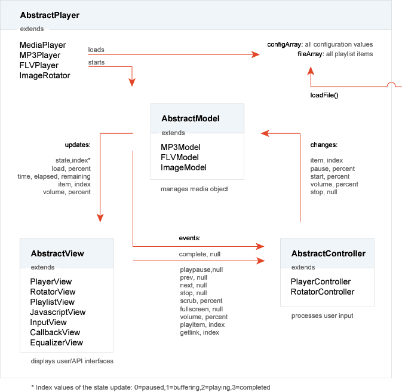

Schematic_Overview
This is a general overview of the Flash Player's structure and inner communication.
A player starts by instantiating any of the Player classes, which will load all config and file variables and set up the MCV cycle.
The fileArray and configArray variables are used by each member of the MCV cycle for setup. Another file can be loaded through the loadFile() function, which is available both in actionscript and javascript.
Communication between the MCV's members is strictly defined (with the updates, changes and events).
Creating a complete new look for any of the players can be done by extending a new AbstractPlayer and AbstractView extension. The PlayerView class is a good AbstractView extension to copy and modify for this purpose. By just extending these, you also keep the ability the update your customized player whenever a new version of the regular player is released (just overwrite all other .as files).
A player starts by instantiating any of the Player classes, which will load all config and file variables and set up the MCV cycle.
The fileArray and configArray variables are used by each member of the MCV cycle for setup. Another file can be loaded through the loadFile() function, which is available both in actionscript and javascript.
Communication between the MCV's members is strictly defined (with the updates, changes and events).
Creating a complete new look for any of the players can be done by extending a new AbstractPlayer and AbstractView extension. The PlayerView class is a good AbstractView extension to copy and modify for this purpose. By just extending these, you also keep the ability the update your customized player whenever a new version of the regular player is released (just overwrite all other .as files).
